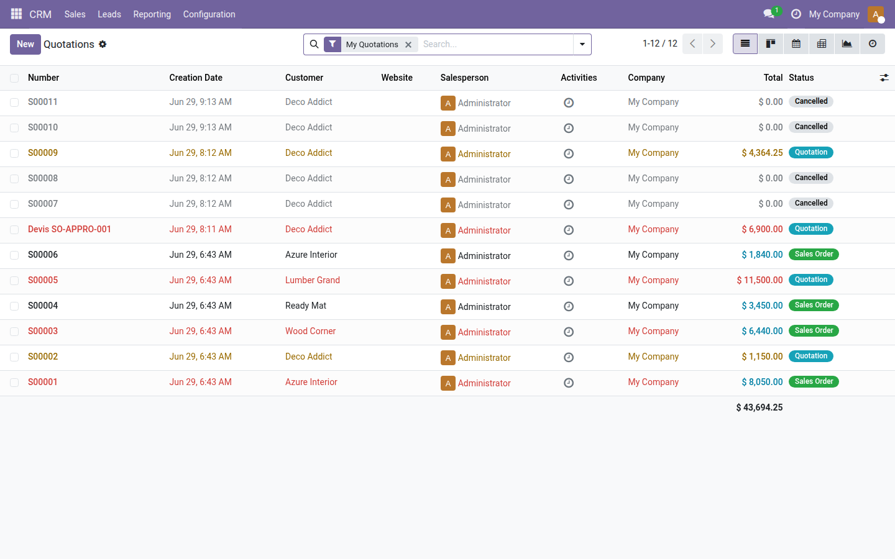
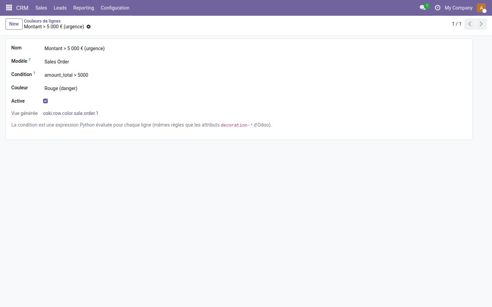
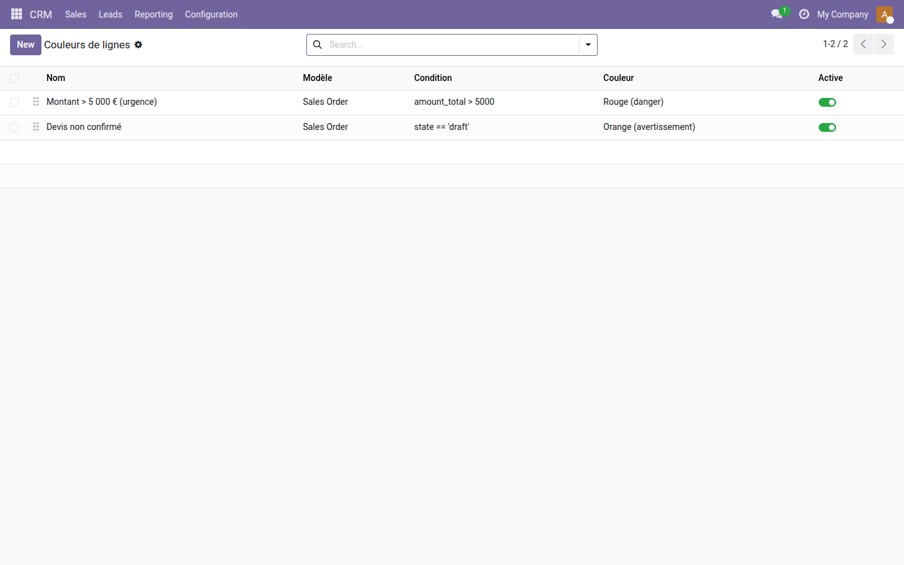

Surlignez vos commandes urgentes, vos factures en retard ou vos articles critiques — sans toucher une seule ligne de code.
Dans Odoo, colorer une ligne de liste nécessite d'éditer du XML et de connaître la syntaxe des attributs decoration-* — une tâche réservée aux développeurs. Résultat : les équipes opérationnelles voient des listes uniformes et doivent ouvrir chaque enregistrement pour distinguer les urgences des cas normaux. Le tri ne suffit pas : il faut une lecture instantanée de l'état à la couleur.
state == 'done', amount_total > 1000) et choisissez la couleur : bleu, vert, orange, rouge ou gris.En rouge, les commandes dépassant 5 000 € (Wood Corner, Lumber Grand, Azure Interior) ; en orange, les devis encore à l'état Quotation (S00002, S00009) — repérage visuel instantané sans filtre supplémentaire.

Trois champs suffisent : le modèle cible (Sales Order), l'expression Python de déclenchement (amount_total > 5000) et la couleur — la vue héritée est créée automatiquement et affichée en lecture seule.

5000, couleur Rouge (danger), vue générée oski.row.color.sale.order.1" style="max-width:100%;border-radius:8px;border:1px solid #e5e7eb;box-shadow:0 4px 14px rgba(0,0,0,.07);margin:10px 0;"/>L'interface liste toutes les règles avec leur modèle, condition et couleur — chaque règle peut être activée ou désactivée en un clic sans la supprimer.

5000 et Orange avertissement pour state == 'draft', toutes deux actives sur Sales Order" style="max-width:100%;border-radius:8px;border:1px solid #e5e7eb;box-shadow:0 4px 14px rgba(0,0,0,.07);margin:10px 0;"/>decoration-* d'Odoo, garanti compatible avec toutes les vues liste de la plateforme.Licence LGPL-3 — compatible Odoo 19.0. Support : apps@odooskills.com.